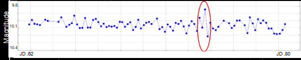

Overview
EV Lacertae is a highly active M-dwarf star prone to rapid and energetic flare events. This project monitored the star over several nights to detect, measure, and analyze these flares using time-series photometry. The goal was to determine flare frequency, amplitude, and duration, and compare findings with existing studies.
Methods
- Time-series imaging with consistent exposure and cadence
- Calibration using bias, dark, and flat frames
- Differential photometry with stable comparison stars
- Light curve creation to identify and measure flare events
Observations
- Observed on multiple nights in June and July 2025
- Exposure times and cadence chosen to balance SNR with flare detectability
- Data processed in AstroImageJ
Findings
- Detected a confirmed flare on July 6, 2025
- Flare amplitude and duration consistent with typical EV Lac flare profiles
- Overall flare frequency lower than some literature values — possibly due to quiet magnetic cycle or observation window limits
Light Curves
Light curve from July 6, 2025, showing a confirmed flare event (circled in red).